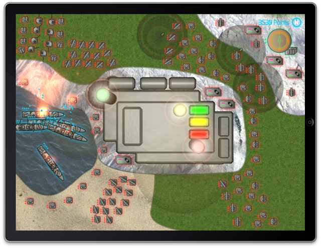
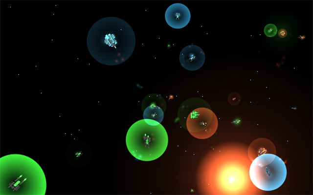
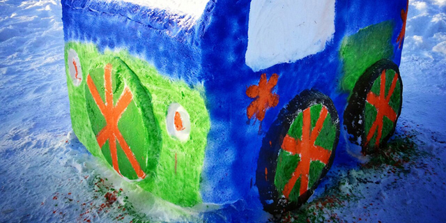

I love diving head-first into new environments, learning new industries and new tools, and discovering how software can make them better. In the 15 years since I was first introduced to programming, I've built systems for desktop, web, and mobile.
I've been an employee and an entrepreneur, working by myself and with a team. I've built knowledge management systems, project management systems, unmanned aircraft control systems, and automated mapping systems.
I don't know where I'll find myself next, but I'm always looking for a good challenge, and an opportunity to build something better.
Software Development Intern, CDL Systems
I completed a 16 month internship at CDL Systems (now Lockeed Martin Canada) between May 2011 and August 2012.
While at CDL, I developed real-time unmanned aircraft control software for the US Army and other clients. I worked on all stages of the project, including designing and coding actual control software, developing automated testing, writing technical integration manual, and automating build and release processes. I worked primarily in C++/Qt, as well as Python and other languages, targeting Linux- and Solaris-based workstations.
Application Developer, Pillar Resource Services
At Pillar, I developed a project management database and reporting system for a two-year construction project. I also maintained and supported the application as client reporting requirements changed. I performed network and desktop maintenance, and developed numerous small business applications.
Software Developer, Trident Exploration
At Trident, I developed an application to aggregate corporate knowledge from multiple database systems, and present it in a user-friendly and effective manner.I gained experience with systems including Peloton WellView, QByte, and AFE Navigator. I also built additional web applications to track EHS incidents, joint ventures, penalty payouts, field compressors, and more.
Application Developer, Aguila Exploration
At Aguila, I developed several major projects including Field Accounting System, extensive ArcMap scripting, and Nortel voicemail notification system. I also built a series of small applications for both end-users and network maintenance.
Teaching Assistant, University of Calgary
I worked in the Faculty of Continuing Education, assisted students in the Certificate in Software Development Program.
Although I'm super busy with work and school, I still seem to find time to hack away on crazy projects. I guess that's what makes software development more than just a job to me - when I get home, I still can't put it down.
Antex
Antex is the fun half of a real-time strategy game for iPad. You control an army of hovercraft, tanks, helicopters, ships and submarines as you explore the ruins of the world, and try to figure out where everyone went.

Spacegame
Spacegame is a simulated space battle, in which each ship is flown by an autopilot that receives only realistic sensor data, and controls only weapon and engine power levels. If a ship wants to spin, it has to figure out how to power its engines to start spinning, and then reverse them to stop. It was basically an excuse to learn 3D physics, real-time control systems and OpenGL.

Check out Spacegame on GitHub.
Fast Rage
Ever needed a rage face right now, to text to your friends? ...yeah, me neither, but I had an Apple developer license sitting around, and a couple hours to kill. Fast Rage is basically me learning how to get an App into the App Store.
Can you believe that Apple rejected it the first time for being 'too simple'?
Fast Rage is in the App Store.
Many, many more
One day, all my old projects will be on GitHub. Until then, email me if you want to see more awesome stuff!
After directing, editing, and producing three Engineering Week movies, I've discovered a love for amateur video production. It lets me do something with all the stories that rattle around in my head, and have some fun in the process. The best part is that now, I can share the fun with you! Below are some of the videos I've made recently.
Scooby Zoo, Where Are You!
In the fall of 2012, I directed, edited and produced Scooby Zoo, the spiritual successor to Pokemon: Zoo Version. After engineering students begin disappearing, and zombie business students threaten the school, The Gang has no choice but to investigate. It's a fabulous, ridiculous adventure, and this time it's not a mistake that it looks like it was shot in the Engineering Block.
Pokemon: Zoo Version
In 2011, I directed and produced the winner of the 2012 Engg Week Film Festival! Join Ash Ketchem, a naive 13-year-old boy, as he embarks out into a twisted parody of the Pokemon world. Watch as he faces off against his bitter rival Dickface Oak, fights the departmental gyms of Engineering, and learns what boobs are. Fun for the whole family*, guaranteed!**
* Not actually fun for the whole family. You probably shouldn't show this to small children. Or your parents. Or anyone who can't take a joke, or doesn't like to watch topless men dance, or hasn't been to Engineering school. Actually screw it, don't show it to anyone.
** Not an actual guarantee.
Zoo Graduation Video 2013
After four long years, my class is finally graduating. And while they may be graduating without me (as my MEED minor adds a semester), I still made them a super fun graduation video. And before you ask, yes, we really did hand all of that in, and yes, we did get an A.
CG Test Shots (Summer 2011)
Who doesn't love gratuitous special effects? Nobody, that's who.
Want more videos?
Watch more awesome videos at youtube.com/jamesthorneengg
Day to day, I'm a Fourth Year Engineering Student at the Schulich School of Engineering, University of Calgary. I'm also working on a Minor in Entrepreneurship and Enterprise Development through the Haskayne School of Business.
Team Lunch Autonomous UAV Systems
I'm the Team Lead for Team Lunch: Autonomous UAV Systems. Team Lunch is building an Engineering Capstone Design project, in which we fit an autonomous collision avoidance system to a small UAV.
In English: We're building a quadcopter that can't crash.
More information can be found on the team's GitHub Page.
Zoo President
I'm the current president of the Electrical, Computer and Software Engineering Students Society, aka Zoo.
Zoo represents Electrical and Software Engineering students at the Schulich School of Engineering. We facilitate student involvement in student and faculty events like Frosh Week and Engineering Week. We also coordinate with the University to improve the Engineering program and handle student issues.
As President, I mainly just make everyone else do stuff :)

Found the Key!
Along with the talented Zoo team, I found the key and won Key Clue 2013.
Key Clue is an intense, week-long alternate reality competition held during Engineering Week. Teams solve puzzles, break ciphers, and lose track of reality as they compete to find a simple house key, hidden somewhere within Calgary city limits.
This year's key was in Lynnewood Ridge Park.
I don't know where I'll find myself next, but I'm always looking for a good challenge, and an opportunity to build something better. If you're looking for someone to do just that, drop me a line!
Contact Me Directly
I'm always available, and I look forward to hearing from you!
- (403) 585-3269
- james@jamesthorne.ca
Download my Resume
My resume is available here:
Around the Internet
You can also find me in these places:
- linkedin.com/in/jamesdthorne has more professional information
- github.com/jdthorne has my projects
- youtube.com/jamesthorneengg has some short films
- twitter.com/jamesdthorne has some tweets
- vizify.com/jamesthorne has an awesome biography